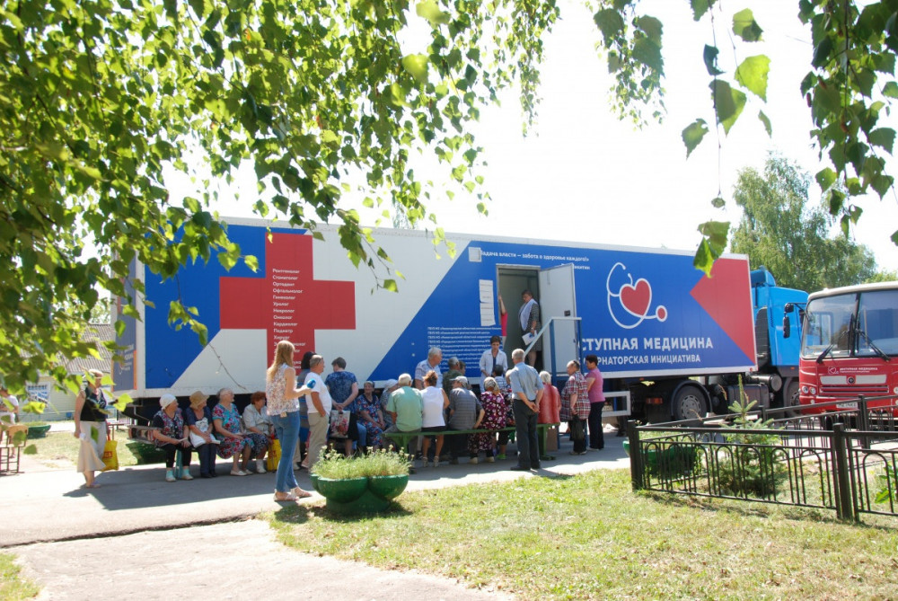

Новости
"Поезд здоровья" прибыл в Лукояновский район
НИА "Нижний Новгород" - Татьяна Соловьёва

"Поезд здоровья" им. И.М. Сеченова остановился в селе Большое Маресьево Лукояновского района. До 20 августа специалисты будут принимать всех желающих жителей из деревень и сёл всего района. При необходимости их привезут к "поликлиникам на колёсах" специальным автотранспортом. Об этом сообщили в правительстве Нижегородской области.Мобильные лечебно-диагностические лаборатории "Поезда здоровья" с начала работы в апреле 2021 года посетили уже 261 населённый пункт Нижегородской области.
Специалисты "поликлиник на колёсах" приняли более 40 тысяч жителей области, а также провели около 52 тысяч исследований. Кроме того, по итогам осмотров порядка 21 тысячи человек получили консультации узких специалистов.
Передвижные лаборатории оснащены современным оборудованием, которое помогает определить опасные заболевания ещё на ранней стадии и оперативно назначить лечение. В мобильных лечебно-диагностических комплексах жители региона могут получить консультации терапевта, кардиолога, онколога, хирурга, невролога, эндокринолога, офтальмолога, уролога, врача УЗИ-диагностики, а также пройти диспансеризацию.
В результате 13 280 нижегородцев направлены на дообследование, а 1 759 жителей деревень и сёл были госпитализированы.
Кроме того, отметили в правительстве, в рамках реализации национального проекта "Демография" организована доставка к "Поездам здоровья" маломобильных граждан и жителей 1 459 маленьких и отдалённых поселений.
Как уже сообщалось, "Поездам здоровья" были присвоены имена известных медиков: Ивана Сеченова, Бориса Королева, Николая Блохина, Павла Гусева и Николая Семашко. Имена выбирали нижегородские медики вместе с пациентами.
Напомним, в послании Федеральному собранию президент России Владимир Путин поручил с 1 июля вернуться к активному проведению профосмотров и диспансеризации, отметив, что в ближайшее время будут наращиваться мощности диагностических мобильных комплексов.